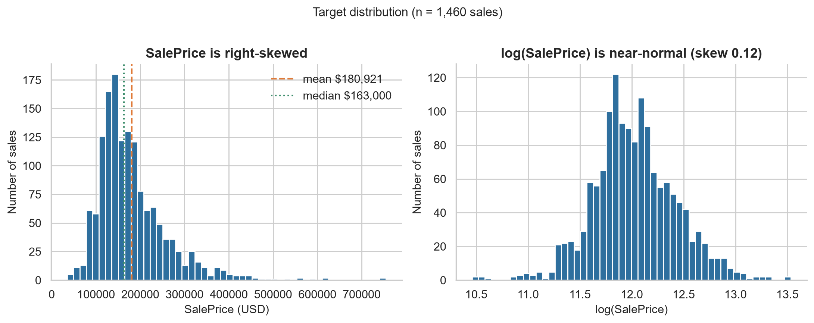
SalePrice is right-skewed (1.88); log(SalePrice) is near-normal (0.12).
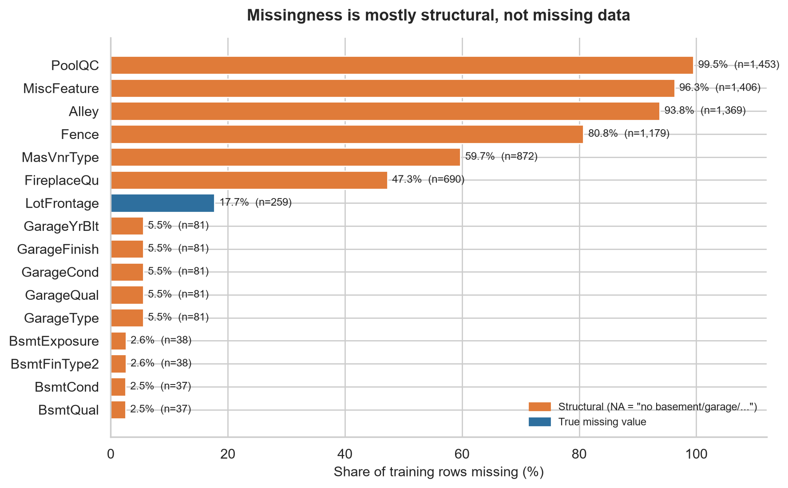
Most blanks are structural absence, not lost data.
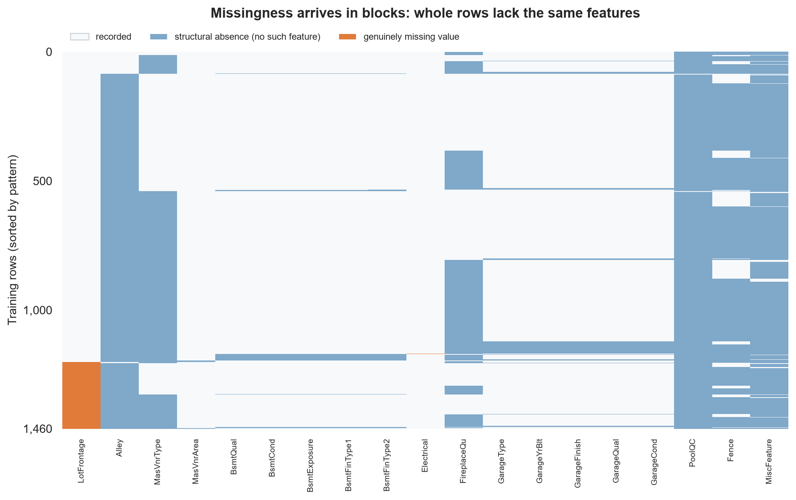
Blue bands = structural absence; orange = genuinely missing values.
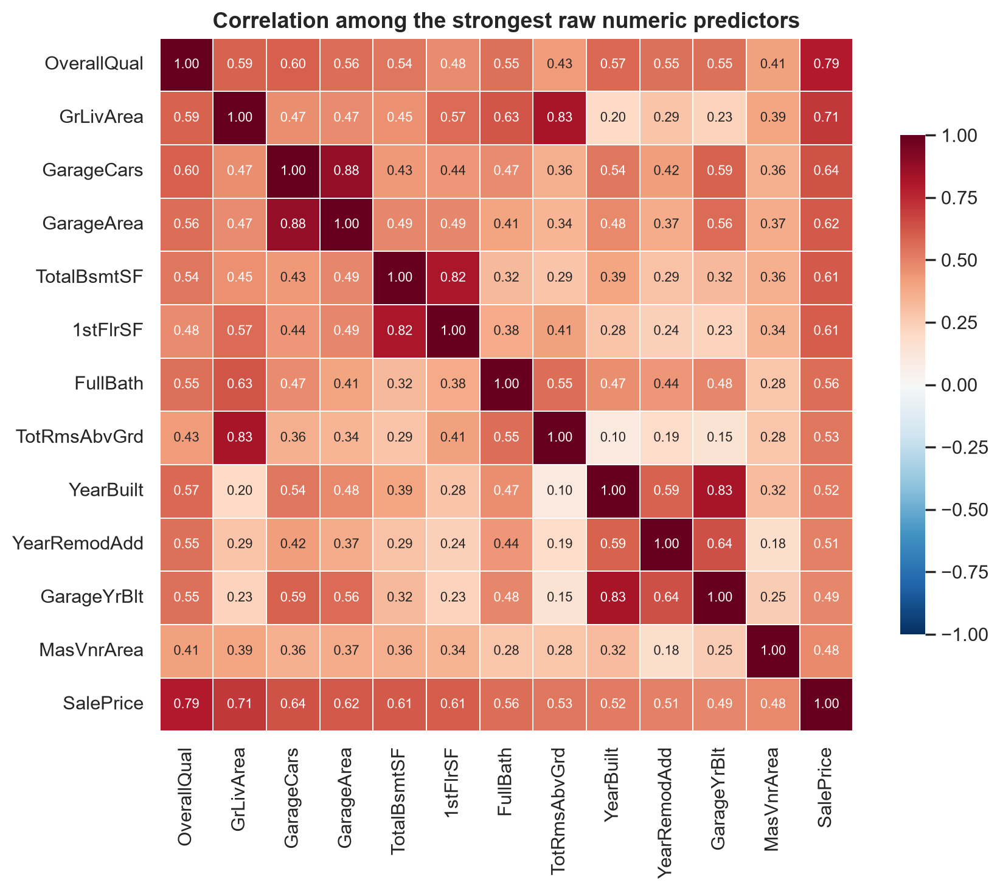
Quality and size lead; the size block is internally redundant.
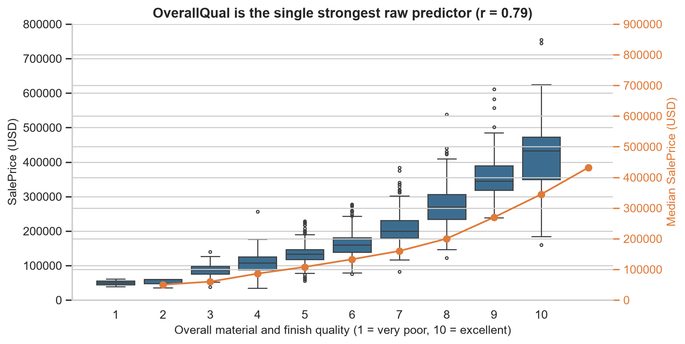
A monotone ladder from $50k to $432k median.
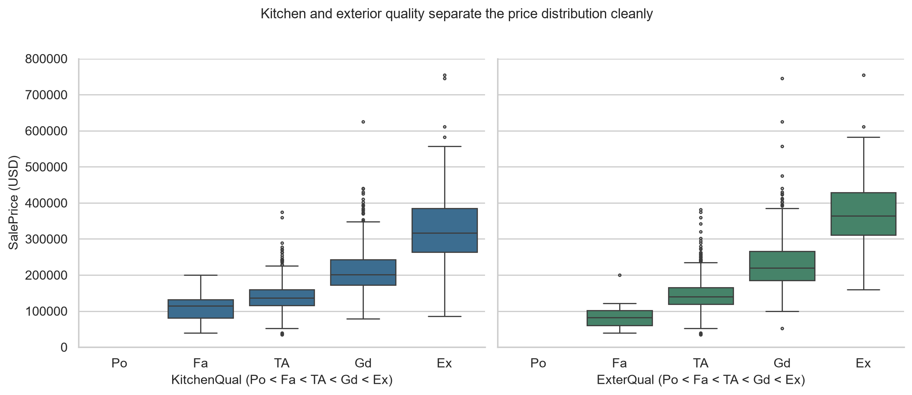
Ordered labels behave as an ordinal scale.
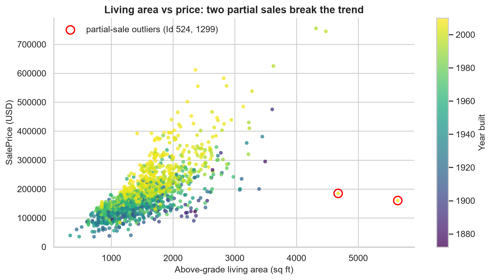
Positive but heteroscedastic; the two partial sales break the trend.
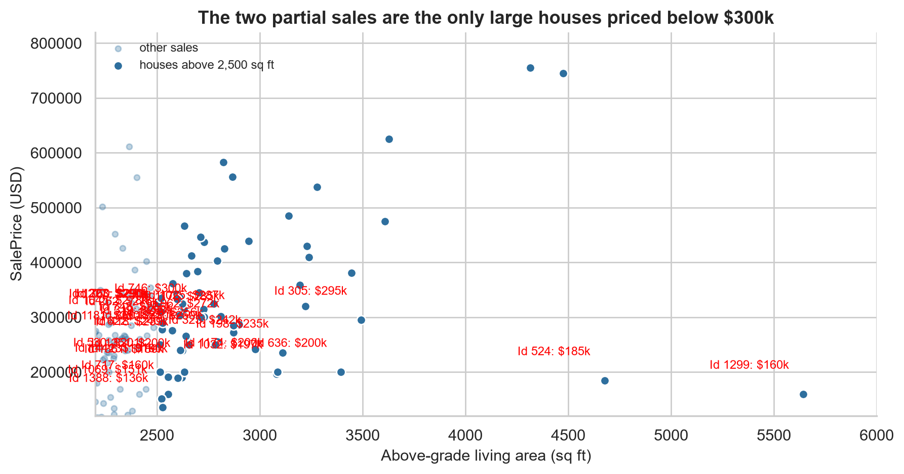
Only Ids 524 and 1299 pair >4,000 sq ft with a price below $300k.
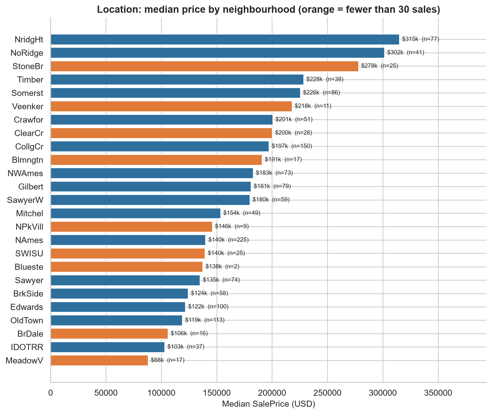
Location alone spans a factor of 3.6.
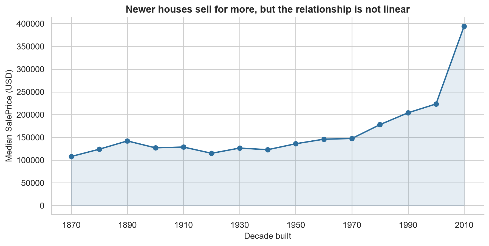
Newer stock sells higher; the effect flattens before 1980.
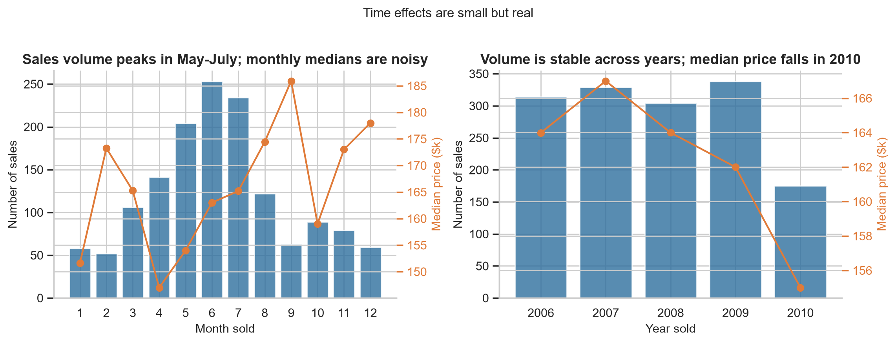
Sales peak in May-July; 2010 medians dip.
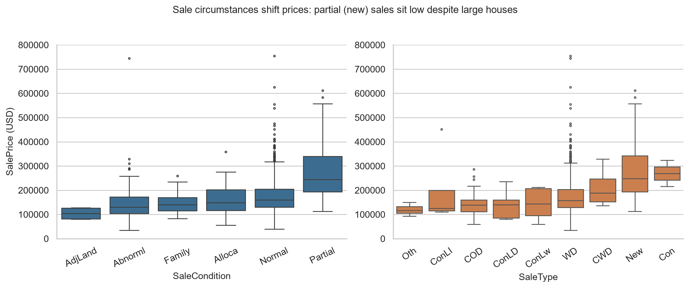
Partial and abnormal sales are systematically cheaper.
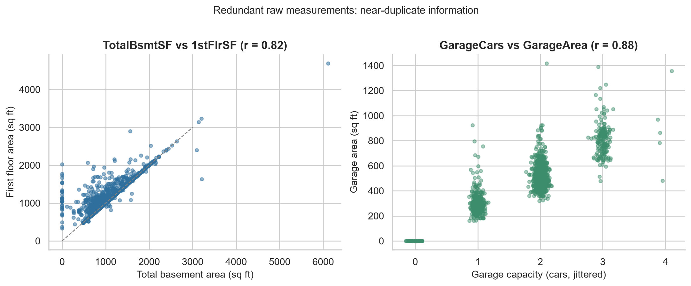
Basement vs 1st floor 0.82; garage cars vs area 0.88.
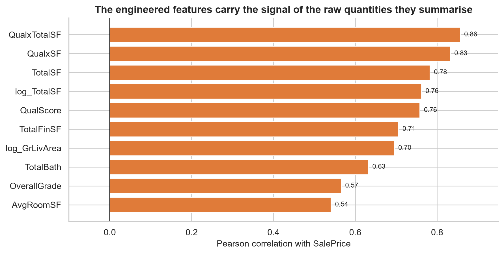
QualxTotalSF (0.86) beats raw TotalSF (0.78).
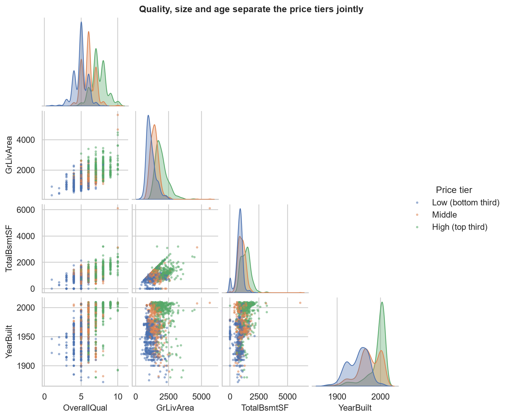
The tiers separate on quality and size together, not on any single variable.
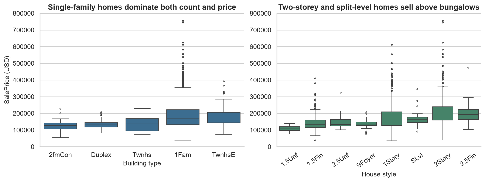
Single-family and two-storey homes dominate the upper range.